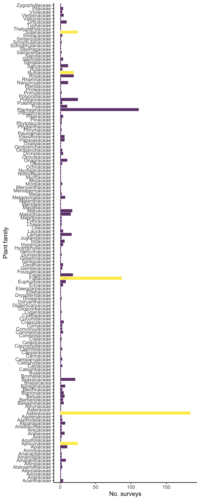

Sampling status
As of November 2019, the Herbivory Variability Network has completed >150 surveys on > 130 plant species from > 50 plant families. These figures and tables update as new data are entered into our database, so check back often!
We have a three-scaled sampling approach:
- Sampling one plant species from as many plant families as possible
- Sampling as many species (and tribes and genera) as possible from five focal families (Apocynaceae, Asteraceae, Fabaceae, Rubiaceae, and Solanaceae)
- Sampling as many sites as possible for two focal species (Taraxacum officinale and Plantago major).
The goal of this stratified sampling plan is to avoid potential biases in geographic and/or taxonomic coverage, as well as to permit robust exploration of factors that shape patterns in herbivory.
Below we show the current status of our sampling for each of the three scales of sampling, our overall geographic extent, and finally our current plant species list. This information is here to share our progress and help collaborators pick sites and species to survey.
Sampling across plant families and within focal plant families

Number of completed surveys per plant family. Our five focal families are in yellow (Apocynaceae, Asteraceae, Fabaceae, Rubiaceae, and Solanaceae).
Sampling within focal species
We have two focal species that we are aiming to sampling across the broadest possible geographic extent and across broad environmental gradients. This is the newest part of our sampling effort, so we are just starting to collect these data.


Geographic extent
A map of our sampling progress.
Sampling areas with at least one completed survey (yellow) and planned sampling areas (purple). We’re continually adding new planned sites.
Species list
Our current species list with the number of surveys completed for each species.
| Plant species | No. surveys |
|---|---|
| Abronia_latifolia | 1 |
| Abutilon_theophrasti | 1 |
| Acer_campestre | 1 |
| Acer_saccharum | 1 |
| Aesculus_parviflora | 1 |
| Ageratina_altissima | 1 |
| Agrimonia_eupatoria | 1 |
| Alliaria_petiolata | 1 |
| Arctium_ | 1 |
| Arctium_minus | 1 |
| Arisaema_triphyllum | 1 |
| Asarum_canadense | 1 |
| Asclepias_cryptoceras | 1 |
| Asclepias_syriaca | 3 |
| Asclepias_tuberosa | 1 |
| Balsamorhiza_sagittata | 3 |
| Brasenia_schreberi | 1 |
| Brassica_oleracea | 1 |
| Bridelia_crenulata | 1 |
| Campanula_persicifolia | 1 |
| Capparis_erythrocarpos | 1 |
| Carpinus_caroliniana | 1 |
| Castanea_sativa | 1 |
| Catalpa_speciosa | 1 |
| Cephalanthus_occidentalis | 1 |
| Cercis_canadensis | 1 |
| Chamaenerion_angustifolium | 1 |
| Chenopodium_album | 2 |
| Chimaphila_umbellata | 1 |
| Circaea_lutetiana | 1 |
| Cirsium_arvense | 1 |
| Cissus_vitiginea | 1 |
| Clidemia_heterophylla | 1 |
| Coccoloba_cereifera | 1 |
| Coccoloba_uvifera | 1 |
| Conoclinium_coelestinum | 1 |
| Croton_capitatus | 1 |
| Cryptantha_cinerea | 1 |
| Cyperus_esculentus | 1 |
| Desmodium_gangeticum | 1 |
| Desmodium_glutinosum | 1 |
| Dioscorea_racemosa | 1 |
| Dudleya_farinosa | 1 |
| Echinacea_purpurea | 2 |
| Enemion_biternatum | 1 |
| Erigeron_glaucus | 1 |
| Erigeron_strigosus | 1 |
| Fouquieria_splendens | 1 |
| Fraxinus_nigra | 1 |
| Glycine_max | 1 |
| Gomphocarpus_fructicosus | 1 |
| Gossypium_hirsutum | 1 |
| Grindelia_squarrosa | 3 |
| Helianthella quinquenervis | 1 |
| Heliotropium_indicum | 1 |
| Hypochaeris_radicata | 1 |
| Ipomoea nil | 1 |
| Lantana_camara | 1 |
| Liriodendron_tulipifera | 1 |
| Lupinus_arboreus | 1 |
| Lupinus_perennis | 1 |
| Lupinus_polyphyllus | 1 |
| Lupinus_sericeus | 2 |
| Melhania_ovata | 1 |
| Melilotus_albus | 1 |
| Mimulus_guttatus | 1 |
| Mimulus_verbanaceus | 1 |
| Monarda_fistulosa | 3 |
| Morinda_pubescens | 1 |
| Munnozia_pinnatipartita | 1 |
| Nectandra_lineata | 1 |
| Nicotiana_attenuata | 1 |
| Onoclea_sensibilis | 1 |
| Opuntia_cespitosa | 1 |
| Opuntia_engelmanii | 1 |
| Pastinaca_sativa | 1 |
| Phaseolus lunatus | 1 |
| Physalis_heterophylla | 1 |
| Physalis_longifolia | 1 |
| Phytolacca_americana | 1 |
| Pilea_pumila | 1 |
| Piper sp 1 | 1 |
| Piper sp 2 | 1 |
| Piper_kelleyi | 1 |
| Piper_umbellatum | 1 |
| Plantago_lanceolata | 1 |
| Plantago_major | 1 |
| Podophyllum_peltatum | 1 |
| Polygonatum_biflorum | 1 |
| Potentilla_gracilis | 1 |
| Potentilla_recta | 1 |
| Potentilla_simplex | 1 |
| Prosopis_velutina | 1 |
| Psychotria_aubletiana | 1 |
| Ptelea_trifoliata | 1 |
| Quercus_alba | 1 |
| Quercus_insignis | 1 |
| Quercus_robur | 2 |
| Ratibida_pinnata | 1 |
| Rhus_copallinum | 1 |
| Ricinus_communis | 1 |
| Ruellia_nudiflora | 1 |
| Rumex_crispus | 1 |
| Sanicula_liberta | 1 |
| Sassafras_albidum | 2 |
| Smilax_hispida | 1 |
| Smilax_sp | 1 |
| Solanum carolinense | 3 |
| Solanum_carolinense | 1 |
| Solanum_donianum | 1 |
| Solanum_incanum | 1 |
| Solanum_nigrum | 1 |
| Solanum_sp | 1 |
| Solanum_tridynamum | 1 |
| Solidago_altissima | 2 |
| Solidago_canadensis/altissima | 1 |
| Solidago_missouriensis | 1 |
| Solidago_speciosa | 1 |
| Taraxacum_officinale | 2 |
| Tilia_americana | 1 |
| Tradescantia_ohiensis | 1 |
| Tradescantia_zanonia | 1 |
| Trembleya_laniflora | 1 |
| Verbascum_lychnitis | 1 |
| Verbascum_thapsus | 1 |
| Verbena-hastata | 1 |
| Vernonia_baldwinii | 1 |
| Vincetoxicum_hirundinaria | 1 |
| Waltheria_indica | 1 |
| Wyethia_mollis | 1 |
| Zea_mays | 1 |
| Zizia_aurea | 1 |